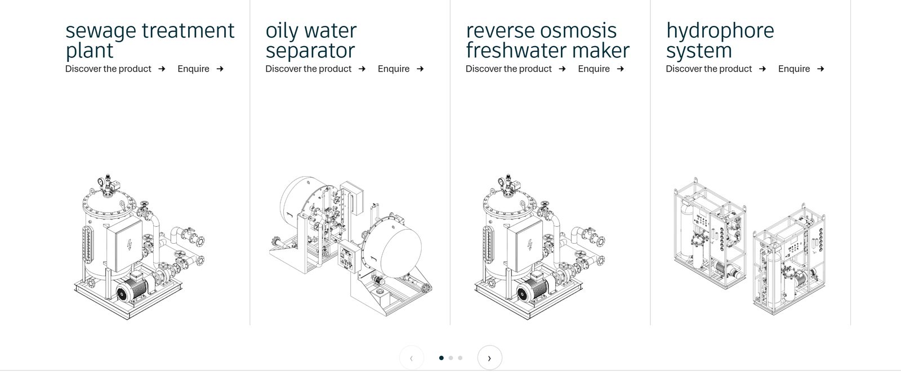
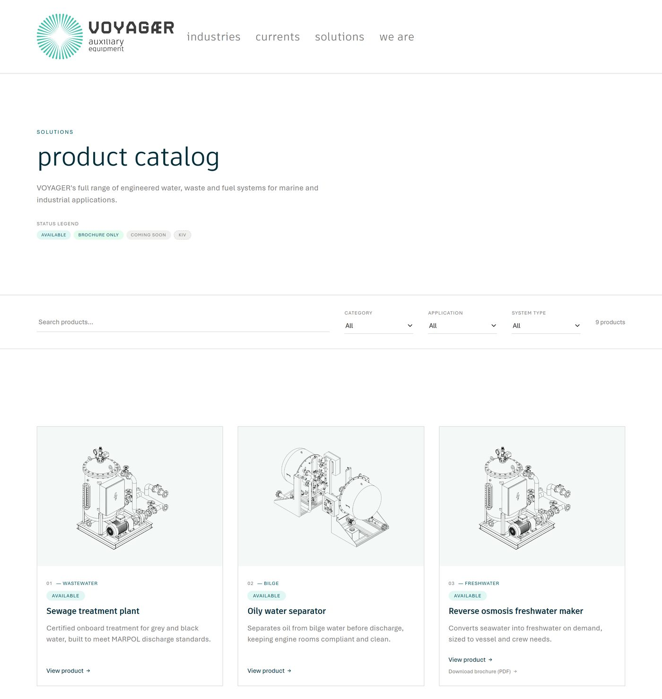
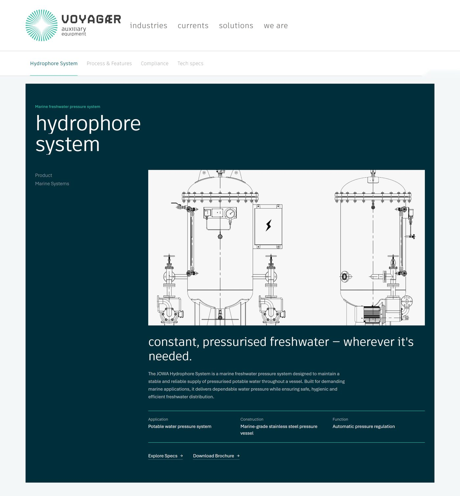
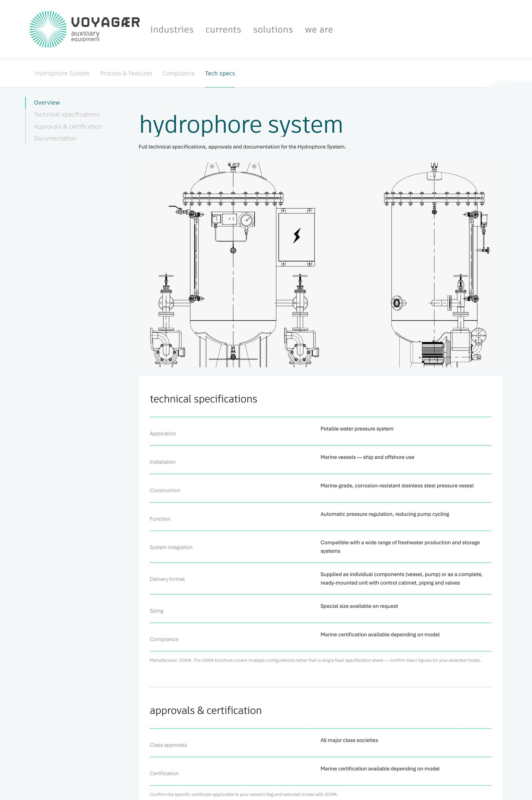
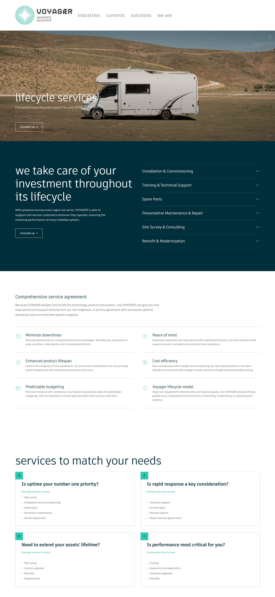
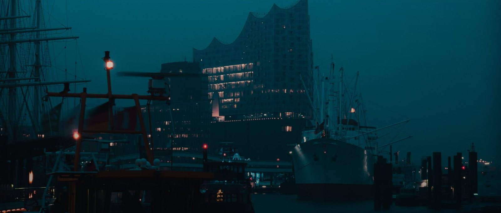
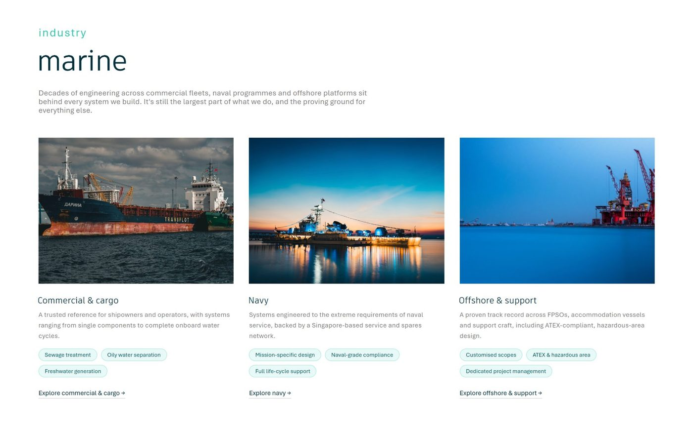
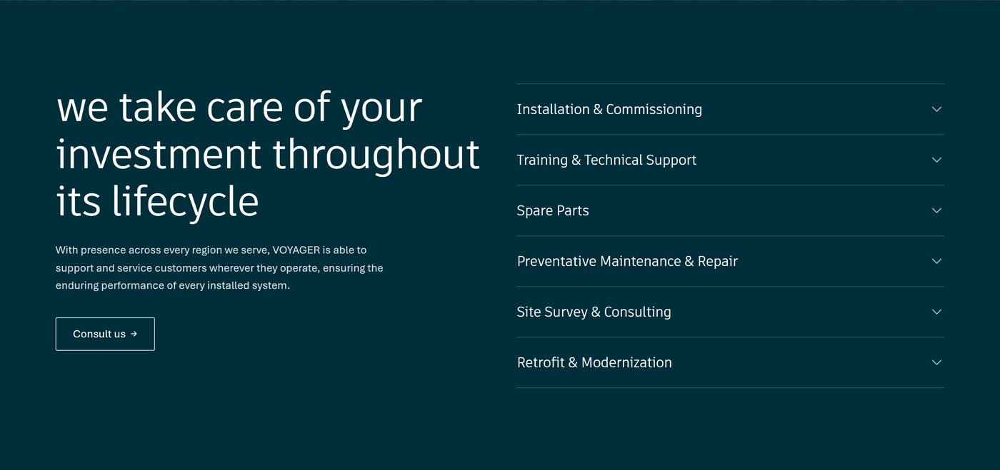
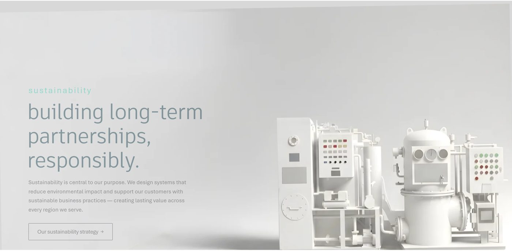
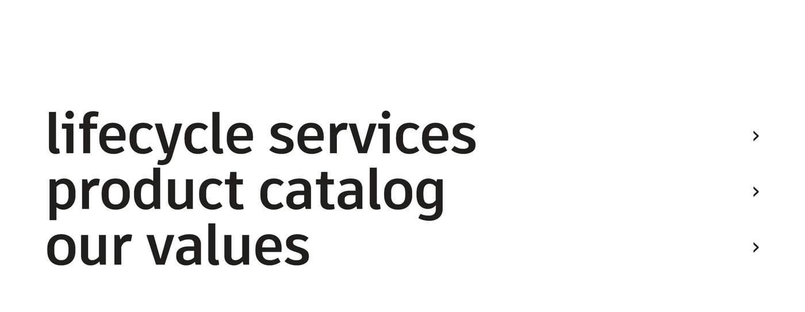

Voyagaer
Auxiliary equipment
A product site for marine engineering.
Voyagaer engineers water, wastewater and fuel systems for marine and industrial applications — sewage treatment plants, oily water separators, freshwater makers, hydrophore systems and more — and supports them across their whole lifecycle. The site is for Voyagaer's customers, new and existing: somewhere to find the right system, read its full specifications and get in touch about it.
- Product catalog
- 9
- Water · waste · fuel
- Industries
- 6
- Marine to civil
- Lifecycle services
- 6
- Install to retrofit
- My role
- Design system and build — a shared design-token system for type, colour and spacing, every section a custom HTML/CSS/JavaScript widget in WordPress (Elementor), and GSAP/ScrollTrigger motion.
- The hard part
- Content and flow. Information and photos arrived in pieces, so I was planning how the site should tell its story — and how customers should move from the company to a product to an enquiry — before I had everything in hand. I tried several flows and layouts before settling on a minimal, professional one.
- In the build
- Many independently built widgets share each page, so every widget's JavaScript is scoped to its own section and they all draw on the same design tokens.
- Next time
- I'd settle the flow and the narrative of the site first, and only then start on the design.
Minimal, so the products lead.
After trying a few directions, I stripped the design back. It borrows the restraint of a premium automotive brand — thin lowercase headings, generous space, one deep sea teal — and pairs it with the depth engineers expect: line drawings instead of renders, full specification sheets and clear routes to an enquiry. Motion is slow and deliberate: clip-path wipes on entry, scroll-triggered cards and quiet parallax.
- Drawings, not renders
Every product is shown as a technical line drawing, so the range reads consistently side by side.
- Depth on demand
Product pages open simply, then go as deep as needed: process, compliance and the full tech sheet.
- Slow, deliberate motion
GSAP clip-path wipes and paced scroll reveals, with fast, gimmicky hover effects removed.


Nine systems,one catalog.
The full range in one place: search, filter by category, application or system type, and see each product's status at a glance before going deeper.
Every spec, one page.
The product pages are the part I'm proudest of. Each one holds all of a system's specs and functions: it opens on deep teal with its own drawing and a one-line promise — for the hydrophore system, constant pressurised freshwater wherever it's needed — then tabs through process and features, compliance and technical specifications, each tab with a layout suited to what it holds.



Grouped by where the systems run.
Marine, industrial and civil, each with its own photography, a short description and the systems that apply, shown as tags.


Deep sea teal, thin type.
- Deep sea#002E3B
- Voyagaer teal#48BDA9
- Mist#F4F7F7
- White#FFFFFF
Artifakt Thin sets the lowercase display headings, Artifakt Regular the second tier, and Aptos the body. The radiating teal mark is the one flourish; deep sea footers map the whole site.
After the installation.
Beyond the products, the site sells what happens after installation — commissioning, training, spare parts, maintenance, surveys and retrofits — and the company's commitment to long-term, responsible partnerships.



WordPress, with hand-coded widgets.
- WordPress · ElementorPlatform
- Custom HTML / CSS / JS widgetsScoped, per section
- GSAP · ScrollTriggerMotion
- Design tokensColour, type & spacing
- Responsive layoutsDesktop, tablet & mobile
voyagaer.com
Have a project like this in mind?
Start a project